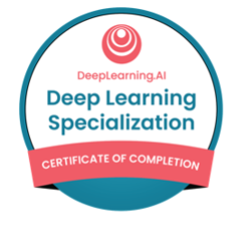

Professional Certificates and Experience
Certifications
| Badge | Name and Information | Date Earned | Date Expired | Certificates |
|---|---|---|---|---|
|
Microsoft Certified: Azure Data Engineer Associate Official Page |
July 1, 2024 | July 2, 2026 |
PDF file; Digital credentials |
|
 |
AWS Certified Cloud Practitioner Official Page |
May 9, 2024 | May 9, 2027 |
PDF file; Digital credentials |
 |
Microsoft Certified: Power BI Data Analyst Associate Official Page |
March 14, 2024 | March 14, 2026 |
PDF file; Digital credentials |
|
Microsoft Office Specialist: Excel Associate (Office 2019) Official Page |
March 7, 2024 | Does not expire |
PDF file; Digital credentials |
|
|  |
Deep Learning Specialization Official Page |
July 11, 2023 | Does not expire |
PDF file; Digital credentials |
 |
Google Advanced Data Analytics Certificate Official Page |
June 28, 2023 | Does not expire |
PDF file; Digital credentials |
|
SAS Advanced Programmer Official Page |
Dec 14, 2024 | Does not expire |
PDF file; Digital credentials |
|
 |
Google Data Analytics Certificate Official Page |
June 14, 2023 | Does not expire |
PDF file Digital credentials |
 |
Web Applications for Everybody Official Page |
August 10, 2023 | Does not expire | PDF file |
|
Web Design for Everybody: Basics of Web Development & Coding Official Page |
July 30, 2023 | Does not expire | PDF file |
 |
IELTS Result: 7.0/9.0 Official Page |
October 20, 2021 | October 19, 2023 |
Test Report Form (TRF): 21HK006743 LIC027A |
To show the weak-related and expired certificates, click this .
Work Experiences
**Remark: The contents displayed here have been approved by the employers and/or the sensitive information has been modified.
Data Scientist
Synergistic IT, Fremont, CA (Remote)
June, 2023 - Present
Cloud-Based Clinical Workload Monitoring System
-
Project Description:
Designed and implemented a cloud-based data pipeline and analytics platform for a hospital to consolidate clinical, HR, and scheduling data for daily reporting on provider workload, documentation timing, and staffing efficiency.
The system integrated AWS-based ETL pipelines, a Snowflake data warehouse, and Power BI dashboards to deliver near real-time insights for HR and clinical operations, enabling proactive workload balancing and reducing reporting latency by over 80%, presenting key metrics in an interactive and user-friendly format. -
My responsibility:
- Designed and maintained a multi-stage ETL pipeline leveraging AWS DMS to capture daily CDC updates from multiple systems in Amazon RDS into a partitioned raw S3 zone, then using AWS Glue (PySpark) to transform and standardize datasets into a curated processed S3 zone for efficient loading into Snowflake.
- Implemented data standardization, null handling, duplicate resolution, and timestamp alignment to ensure cross-system consistency.
- Performed SQL-based data quality checks and remodeled the data into a star schema with SCD Type 2 dimensions in Snowflake to support business-critical reporting.
- Applied column-level masking in Snowflake and aligned all data access controls with HIPAA compliance.
- Automated pipeline orchestration using AWS Managed Workflows for Apache Airflow (MWAA), monitored workflows using AWS CloudWatch, and configured SNS alerts for pipeline failures or data anomalies.
- Collaborated with BI analysts to define clinical workload metrics, built curated Snowflake views, and implemented row-level security for department-specific access.
- Developed Power BI dashboards for HR and operations teams, visualizing appointment volumes, documentation delays, off-shift activity, and workload distribution by clinic and provider role.
- Enabled HR to proactively identify staff overloads, reduce burnout risk, and improve resource allocation; cut reporting time from 12 hours to under 3 hours, supporting data-driven staffing decisions across multiple clinics.
- Trained users on pipeline and dashboard functionality and interpretation, facilitating adoption for the HR team.
-
Technology Used:
AWS (Glue, S3, RDS, DMS, CloudWatch, SNS, IAM, KMS, CloudFormation, MWAA/Airflow), Snowflake, SQL, PySpark, Power BI, Python
Social Media Sentiment Analysis and Reporting
-
Project Description:
Partnered with a fellow data scientist to design and deploy an Azure-based NLP system for sentiment analysis on 16,000 post-sale reviews from an online clothing store. Developed an Azure Data Factory ingestion pipeline and implemented a PySpark-based Azure Databricks workflow to clean, process, and classify review text using a BERT-based model. Visualized sentiment trends and generated automated weekly reports to inform product feedback analysis and guide marketing strategies.
-
My responsibility:
- Configured an Azure Data Factory pipeline to ingest data from an on-premise database into Azure Data Lake Storage, scheduled for weekly updates.
- Developed an Azure Databricks notebook using PySpark to perform data cleaning, deduplication, and null handling.
- Implemented NLP workflows for text cleaning, lemmatization, and stop-word removal; performed sentiment intensity analysis using a BERT-based model from Hugging Face Transformers.
- Trained and fine-tuned a Random Forest classifier to predict sentiment labels, optimizing preprocessing parameters to improve classification accuracy.
- Evaluated model performance and produced comprehensive sentiment trend reports by product and time period, achieving an overall satisfactory rate of 96% with an upward trend.
- Automated the end-to-end workflow—from ingestion to reporting—using ADF triggers and Databricks job scheduling.
-
Technology Used:
Python, PySpark, Azure Data Factory, Azure Databricks, Azure Data Lake Storage, Hugging Face Transformers, BERT, Random Forest, NLP
Predictive Sales Analytics Platform
-
Project Description:
Performed a machine learning model to predict total sales for each product and shop for a retail chain using 2.9 million daily historical sales data from 22,169 kinds of items and 59 shops using NLP and time series techniques, enhancing inventory optimization and driving data-driven decision-making.
-
My responsibility:
- Imported and merged table into pandas DataFrames, removed duplicates and imputed missing values.
- Implemented TF-IDF vectorizer to extract features from item and shop names, creating text-based features.
- Engineered lagged features and trend-based features for time series analysis.
- Conducted Exploratory Data Analysis (EDA), including visualization of target distribution and time trends. Used multivariate heatmaps to analyze numerical and categorical pairings.
- Applied mean encoding on categorical features and matrix factorization for text features.
- Constructed and trained pipelines with the above transformations and Ridge, XGBoost, and LightGBM regressors.
- Performed feature selection using Recursive Feature Elimination with Cross-Validation (RFECV) and optimized hyperparameters using Bayesian optimization.
- Evaluated models through cross-validation, analyzing Root Mean Square Error (RMSE).
- Predicted future outcomes and compiled comprehensive reports.
-
Technology Used:
Python, Scikit Learn, Machine Learning Pipeline, NLP, TF-IDF, mean encoding, matrix factorization, Ridge Regressor, LightGBM Regressor, XGBoost Regressor, feature selection, hyperparameter optimization.
Sport Corporation Sales Analysis
-
Project Description:
Developed an advanced Power BI dashboard for an international sports corporation to analyze sales data, providing real-time insights into sales performance, discount analysis, and regional success. The dashboard was designed to facilitate data-driven decision-making by presenting key metrics in an interactive and user-friendly format.
-
My responsibility:
- Created and filtered data using SQL on the on-premise dataset, leveraging a star schema data model with the Sales table at the center for optimized performance.
- Cleaned and transformed data using Power Query, ensuring data accuracy and consistency.
- Implemented advanced DAX formulas to create columns and measures for in-depth analysis, including update time display, discount calculations and fiscal year-specific insights.
- Designed a one-page interactive dashboard with key metrics, including total sales, customer counts, product sales, and discount analysis.
- Incorporated various visualizations for comprehensive sales insights, making the data easily interpretable.
- Enabled scheduled refresh to ensure real-time data updates, keeping the dashboard always up-to-date with the latest data.
- Published the dashboard to the Power BI service for broad access and distribution within the organization.
- Collaborated with stakeholders to understand business requirements and tailor the dashboard to meet their needs.
- Conducted user training sessions to ensure effective use and interpretation of the dashboard.
-
Technology Used:
Microsoft SQL Server, Power BI services, Power Query, DAX.
Retail Chain Transaction Analysis
-
Project Description:
Developed a comprehensive Power BI dashboard to analyze retail chain transactions, providing actionable insights into product sales, customer behavior, seasonal trends, and the effectiveness of promotions. The dashboard facilitated data-driven decision-making with detailed visualizations and interactive features.
-
My responsibility:
- Utilized Power Query to clean and transform data, including splitting and unpivoting the Product column.
- Developed advanced DAX formulas to create calculated columns and measures for in-depth analysis.
- Created detailed Product Analysis and Customer Analysis pages featuring key metrics, slicers, and interactive visuals such as line charts, treemaps, and ribbon charts.
- Ensured alignment and consistency across all dashboard pages for a cohesive user experience.
- Integrated product and customer analysis visuals into a combined Retail Analysis Page with interactive buttons for toggling between views using bookmarks.
- Designed and presented slides summarizing key insights and findings to stakeholders, facilitating informed decision-making.
- Conducted stakeholder meetings to gather requirements and incorporate feedback into the dashboard design.
- Provided training and support to users for effective utilization and interpretation of the dashboard.
-
Technology Used:
Power BI services, Power Query, DAX, Bookmarks, Slides.

Statistical Consultant
University of Chicago, Chicago, IL
September - November 2023
-
Description:
Managed the project execution of three client-facing consulting projects within two months, working with a team of five consultants to analyze data issues, communicate insights, and provide tailored statistical recommendations through client meetings and comprehensive reports.
- Details could be checked at Statistical Consulting section in the Research page.